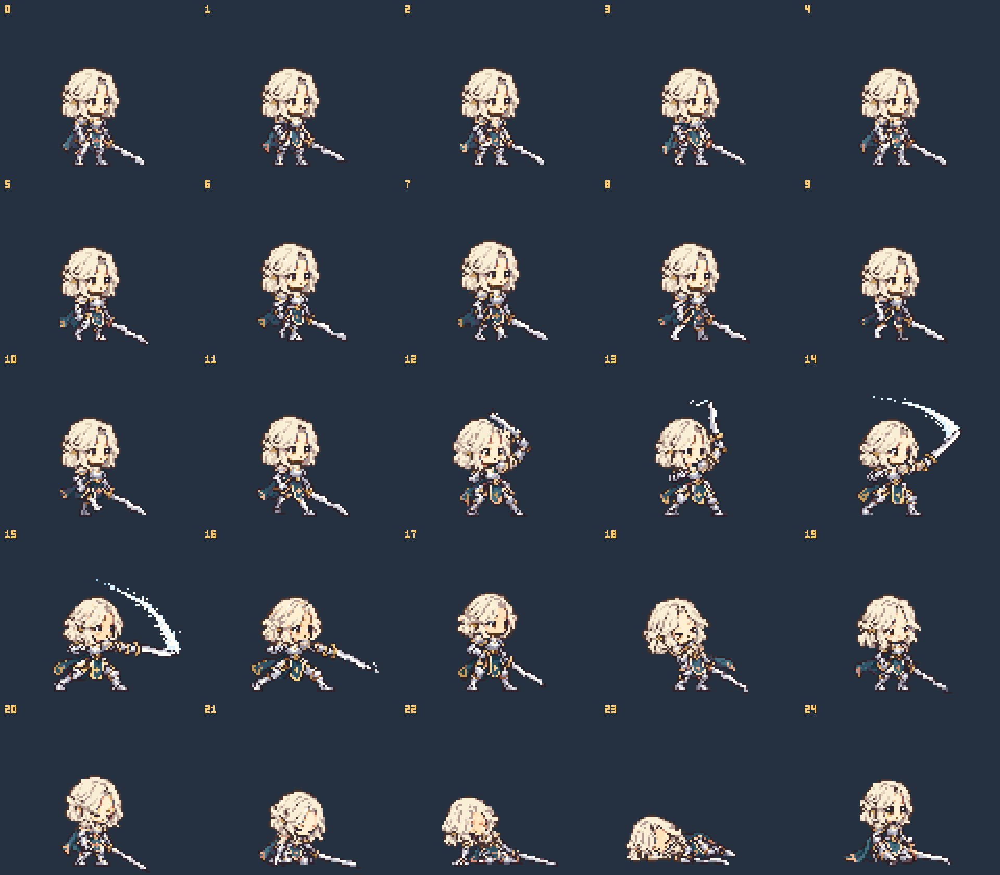

R13 · 청록 판금 기사
신규 여성 기사 / 오른쪽 3⁄4 / 48px 대기 키 / 128×120 캔버스 / 발 기준점 (64,112)
25장 · 대기 4 / 걷기 8 / 공격 6 / 피격 2 / 쓰러짐 4 / 앉기 1
GIF는 동작 검토용으로 반복 재생합니다. 게임에서는 manifest의 loop·holdLast를 따릅니다.
매니페스트 · 제작 노트 · 검증 결과 · 전체 프레임
쿠키와 같은 크기로 비교

머리색 변경 · 무기 숨김

전체 25장
